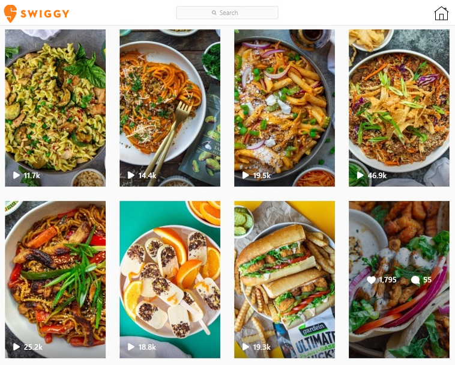

Swiggy's Food Reels: Elevating Food Experiences Through Short Videos

Objective:
As a budding UI/UX designer, my goal was to enhance user engagement on Swiggy through a captivating feature called "Food Reels". This feature aims to revolutionize how users interact with food by enabling them to share short video clips of their culinary adventures directly within the Swiggy app.
Approach:
- Conceptualized an intuitive interface for creating, sharing, and exploring Food Reels.
- Designed sleek and user-friendly controls to ensure seamless integration into the Swiggy app.
- Envisioned potential monetization avenues, including honest reviews and paid partnerships, to empower content creators and foster collaboration with brands.
Benefits for Content Creators:
- Visibility: Food Reels offer content creators a prominent platform to showcase their culinary creations and food experiences.
- Engagement: Users can engage with content creators through likes, comments, and shares, fostering a vibrant community around food.
- Monetization: Honest reviews and paid partnerships present exciting opportunities for content creators to monetize their content and collaborate with brands.
Conclusion:
By proposing the introduction of Food Reels on Swiggy, I aimed to not only elevate user engagement but also empower content creators to share their passion for food in a dynamic and interactive way. This project underscores my creativity, innovation, and vision as a UI/UX designer, showcasing my ability to conceptualize compelling features that resonate with users and drive value for businesses.